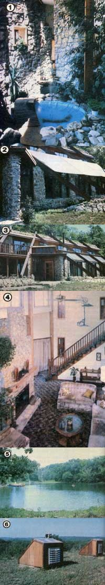

[1] Walls, filled with jugs of water, were designed to face 45 west of south... in order to catch and store the warmth of the afternoon sun. The fountain is not only scenic, but serves to add humidity to the home's atmosphere. [2] Sunscreen shading-another example of the dwelling's multiple weatherproofing systems - rests along unique slanted wooden buttresses.... and helped tokeep the interior of the house comfortable on the scorching 105 day that MOTHER visited the Kansas family. [3] This overall view of the hybrid shows some of the fine rockwork (all dont with stone quarried from the Knapp's property), and the air-lock entryway (on the left) that helps prevent the outside climate from influencing the home's internal temperature. [4] The attractive fireplace features a water-pipe grate that feeds hot H2O to a 40-gallon storage tank. [5] Cool pond water will soon flow through the home's radiator on hot summer days. [6] The rooftop air vents rise out of a ""field"" of crown vetch.